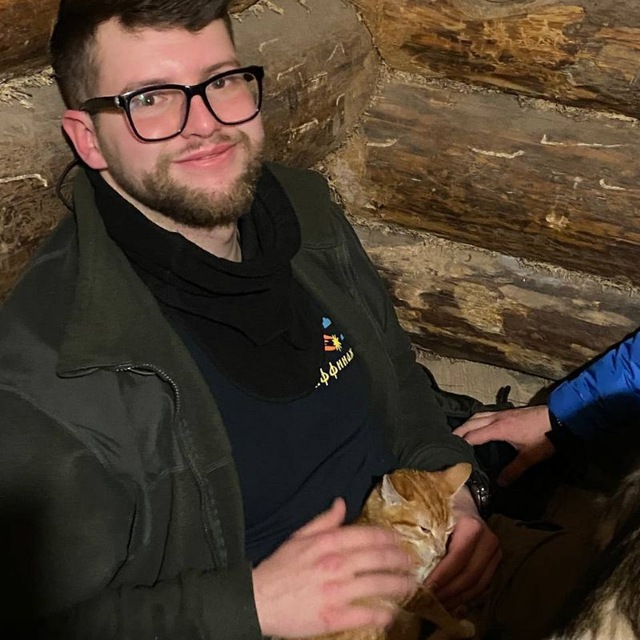
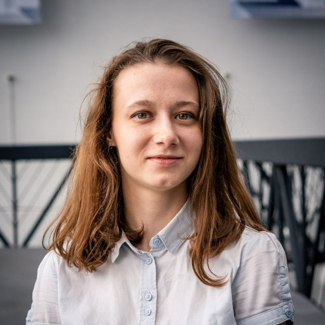

Здравствуйте
3D-моделирование, 3D-принтер, Веб-дизайн
В нашем направлении 14 человек, все мы учились дизайну и 3D-моделированию в рамках смены “Сириус”.
В процессе работы над проектом, нам помогали первоклассные учителя:
|
 |
|
 |